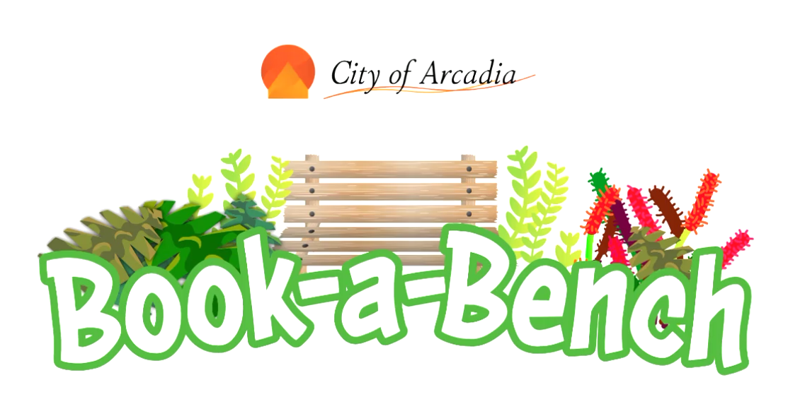
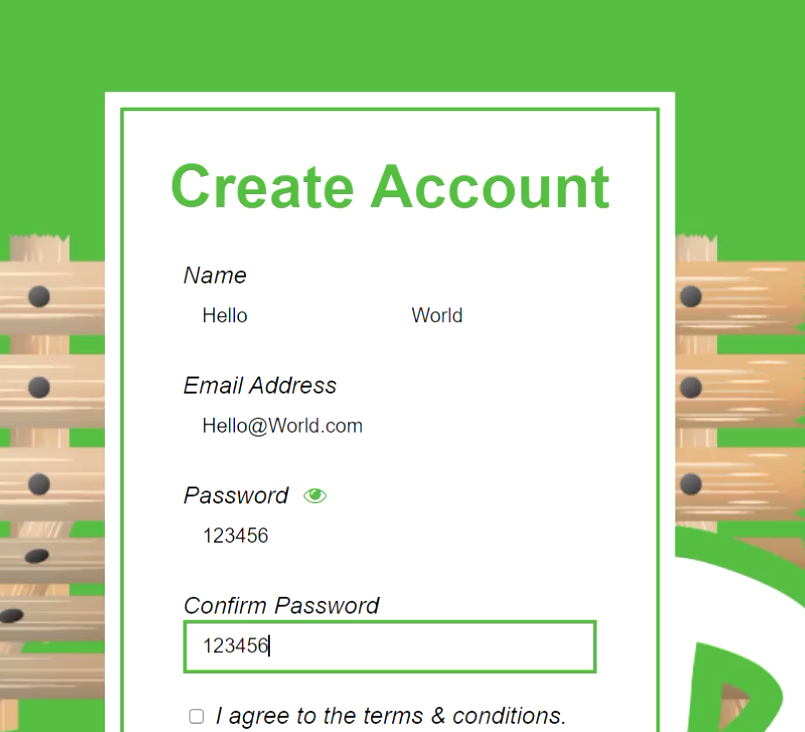
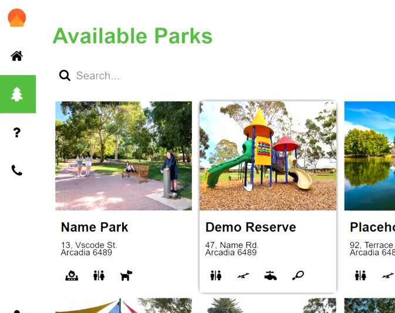
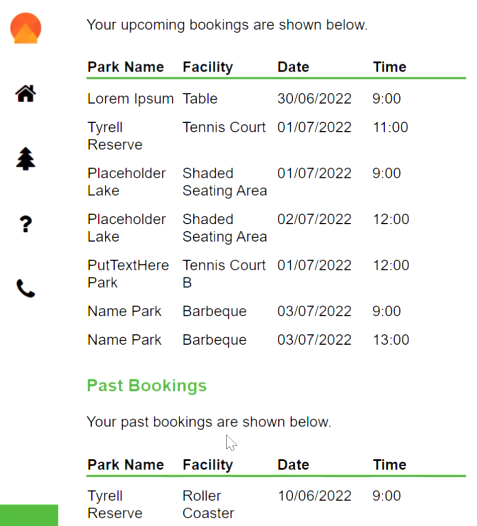
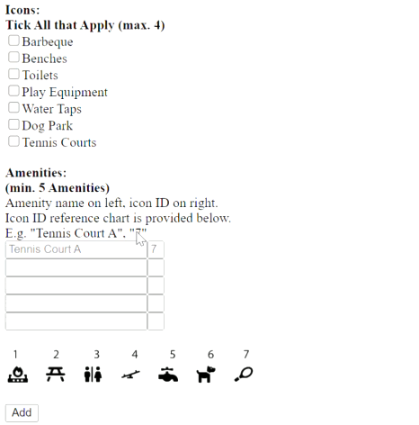

Book a Bench is my final Year 11 Coding Project. On the website, users can navigate to the parks within their (fictional) council area, and book council facilities. The website remembers which facilities have been booked and at which times, preventing any double bookings. With a bit of guidance from my peers (namely, Mark Gurney) I learnt a bit of PHP, and SQL to make a website that could dynamically store information and react to users' requests.
Book a Bench allows users to create and manage accounts through its account system connected to a database. Passwords are safely hashed and users can sign back in any time.
When signed in, users can navigate to the parks page, search for parks. When on the page, users can select a date and a park facility. They can check what times are available and, if they wish, book them at no charge.
From every user's profile page, they can view all of their bookings from the past and in the future. Because every individual booking is stored in a database, displaying that data is just a matter of making a request to the database for all the bookings whose user ID matches the ID of the signed in user.
Throughout this project, my goal was to make the program flexible and easy to amend; the kind of thing that would exist in the real world and actually be used. For this reason, I didn't hardcode the parks and instead stored them in a third database (the first two being users & bookings) that could be amended by admins using a special admin form.
This is one of the first projects I've worked on where I am left genuinely proud of my efforts and how they project came out. It's a great feeling and there's so much else that I would love to show you. This was a fascinating project that involved ample learning and many small but brilliant challenges, but I need to end this article at some point so I'll leave it there!
It is a terrible tragedy that, at the time of writing, Book a Bench is no longer available online due to hosting difficulties. Hopefully this changes soon. In the meantime (I'm going to regret uploading this!), you can have a look at the school project's submission video to see how the website works.